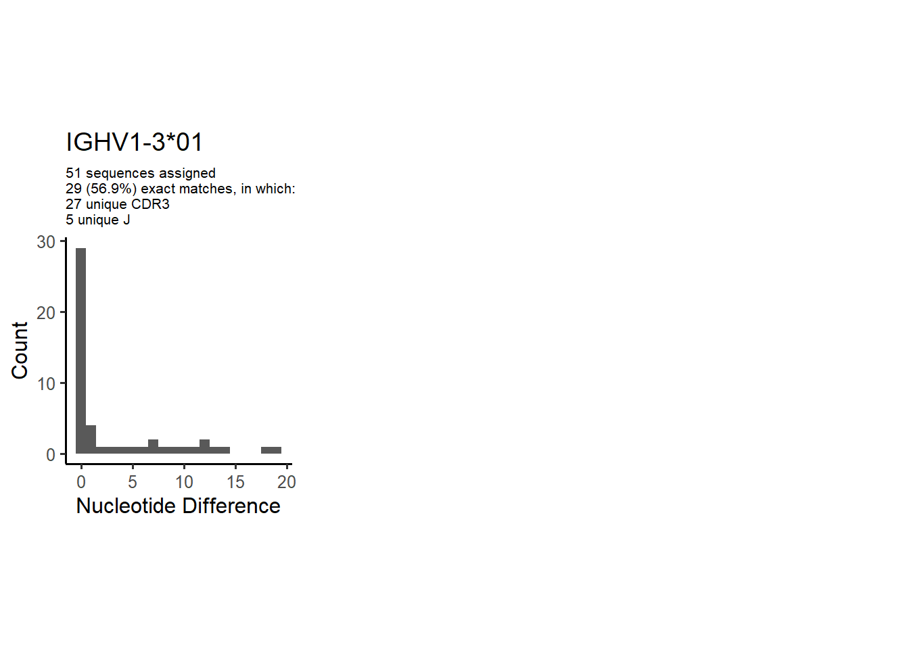
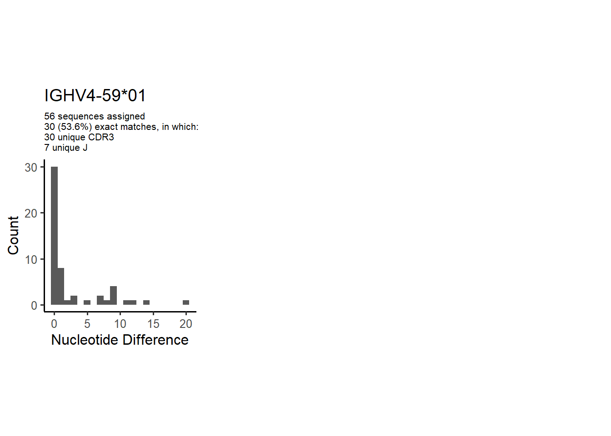
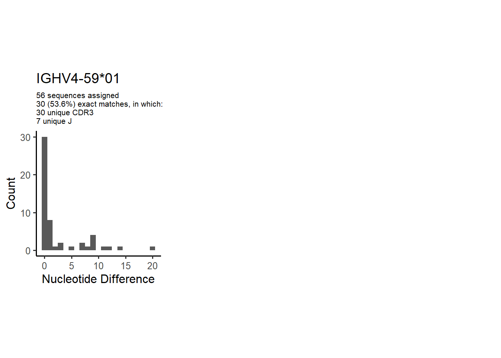
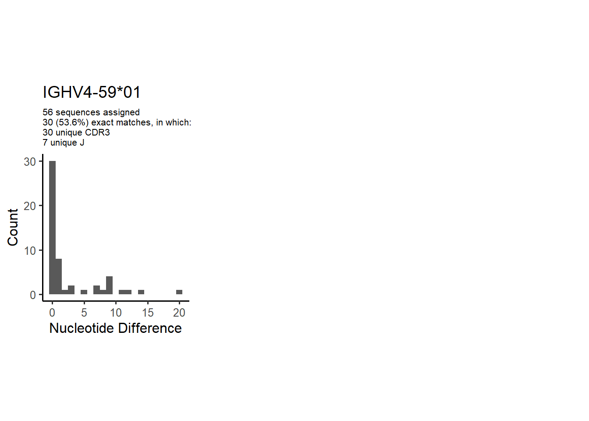

1
Novel sequence analysis
1.1
CDR3 length distribution, in assignments to novel alleles
2
Variation from germline, in assignments to each allele
3
Allele usage in potential haplotype anchor genes
4
Configuration settings
OGRDBstats Report
2
Variation from germline, in assignments to each allele




 
